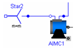
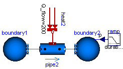
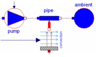

Modelica.UsersGuide
Modelica.UsersGuide
Modelica.UsersGuide
Modelica.UsersGuide
Package Modelica is a standardized and pre-defined package that is developed together with the Modelica language from the Modelica Association, see https://www.Modelica.org. It is also called Modelica Standard Library. It provides constants, types, connectors, partial models and model components in various disciplines.
This is a short User's Guide for the overall library. Some of the main sublibraries have their own User's Guides that can be accessed by the following links:
| Digital | Library for digital electrical components based on the VHDL standard (2-,3-,4-,9-valued logic) |
| FluxTubes | Library for modelling of electromagnetic devices with lumped magnetic networks |
| MultiBody | Library to model 3-dimensional mechanical systems |
| Rotational | Library to model 1-dimensional mechanical systems |
| Fluid | Library of 1-dim. thermo-fluid flow models using the Modelica.Media media description |
| Media | Library of media property models |
| SIunits | Library of type definitions based on SI units according to ISO 31-1992 |
| StateGraph | Library to model discrete event and reactive systems by hierarchical state machines |
| Utilities | Library of utility functions especially for scripting (Files, Streams, Strings, System) |
Extends from Modelica.Icons.Information (Icon for general information packages).
| Name | Description |
|---|---|
| Overview of Modelica Library | |
| Connectors | |
| Conventions | |
| Parameter defaults | |
| Modelica License 2 | |
| Release notes | |
| Contact |
Modelica.UsersGuide.OverviewThe Modelica Standard Library consists of the following main sub-libraries:
| Library Components | Description |
|---|---|

|
Analog Analog electric and electronic components, such as resistor, capacitor, transformers, diodes, transistors, transmission lines, switches, sources, sensors. |

|
Digital Digital electrical components based on the VHDL standard, like basic logic blocks with 9-value logic, delays, gates, sources, converters between 2-, 3-, 4-, and 9-valued logic. |
|  |
Machines Electrical asynchronous-, synchronous-, and DC-machines (motors and generators) as well as 3-phase transformers. |

|
FluxTubes Based on magnetic flux tubes concepts. Especially to model electro-magnetic actuators. Nonlinear shape, force, leakage, and material models. Material data for steel, electric sheet, pure iron, Cobalt iron, Nickel iron, NdFeB, Sm2Co17, and more. |
|
|
Translational 1-dim. mechanical, translational systems, e.g., sliding mass, mass with stops, spring, damper. |

|
Rotational 1-dim. mechanical, rotational systems, e.g., inertias, gears, planetary gears, convenient definition of speed/torque dependent friction (clutches, brakes, bearings, ..) |
 
|
MultiBody 3-dim. mechanical systems consisting of joints, bodies, force and sensor elements. Joints can be driven by drive trains defined by 1-dim. mechanical system library (Rotational). Every component has a default animation. Components can be arbitrarily connected together. |
|  |
Fluid 1-dim. thermo-fluid flow in networks of vessels, pipes, fluid machines, valves and fittings. All media from the Modelica.Media library can be used (so incompressible or compressible, single or multiple substance, one or two phase medium). |

|
Media Large media library providing models and functions to compute media properties, such as h = h(p,T), d = d(p,T), for the following media:
|
|  | FluidHeatFlow, HeatTransfer Simple thermo-fluid pipe flow, especially to model cooling of machines with air or water (pipes, pumps, valves, ambient, sensors, sources) and lumped heat transfer with heat capacitors, thermal conductors, convection, body radiation, sources and sensors. |
 
|
Blocks Input/output blocks to model block diagrams and logical networks, e.g., integrator, PI, PID, transfer function, linear state space system, sampler, unit delay, discrete transfer function, and/or blocks, timer, hysteresis, nonlinear and routing blocks, sources, tables. |

|
StateGraph Hierarchical state machines with a similar modeling power as Statecharts. Modelica is used as synchronous action language, i.e., deterministic behavior is guaranteed |
A = [1,2,3;
3,4,5;
2,1,4];
b = {10,22,12};
x = Matrices.solve(A,b);
Matrices.eigenValues(A);
|
Math,
Utilities Functions operating on vectors and matrices, such as for solving linear systems, eigen and singular values etc., and functions operating on strings, streams, files, e.g., to copy and remove a file or sort a vector of strings. |
Extends from Modelica.Icons.Information (Icon for general information packages).
Modelica.UsersGuide.ConnectorsThe Modelica standard library defines the most important elementary connectors in various domains. If any possible, a user should utilize these connectors in order that components from the Modelica Standard Library and from other libraries can be combined without problems. The following elementary connectors are defined (the meaning of potential, flow, and stream variables is explained in section "Connector Equations" below):
| domain | potential variables |
flow variables |
stream variables |
connector definition | icons |
| electrical analog |
electrical potential | electrical current | Modelica.Electrical.Analog.Interfaces
Pin, PositivePin, NegativePin |
 | |
| electrical multi-phase |
vector of electrical pins | Modelica.Electrical.MultiPhase.Interfaces
Plug, PositivePlug, NegativePlug |
 | ||
| electrical space phasor |
2 electrical potentials | 2 electrical currents | Modelica.Electrical.Machines.Interfaces
SpacePhasor |
||
| quasi stationaray single phase |
complex electrical potential | complex electrical current |
Modelica.Electrical.QuasiStationary.SinglePhase.Interfaces
Pin, PositivePin, NegativePin |
 | |
| quasi stationary multi-phase |
vector of quasi stationary single phase pins | Modelica.Electrical.QuasiStationary.MultiPhase.Interfaces
Plug, PositivePlug, NegativePlug |
 | ||
| electrical digital |
Integer (1..9) | Modelica.Electrical.Digital.Interfaces
DigitalSignal, DigitalInput, DigitalOutput |
 | ||
| magnetic flux tubes |
magnetic potential | magnetic flux |
Modelica.Magnetic.FluxTubes.Interfaces
MagneticPort, PositiveMagneticPort, NegativeMagneticPort |
 | |
| magnetic fundamental wave |
complex magnetic potential | complex magnetic flux |
Modelica.Magnetic.FundamentalWave.Interfaces
MagneticPort, PositiveMagneticPort, NegativeMagneticPort |
||
| translational | distance | cut-force | Modelica.Mechanics.Translational.Interfaces
Flange_a, Flange_b |
||
| rotational | angle | cut-torque | Modelica.Mechanics.Rotational.Interfaces
Flange_a, Flange_b |
 | |
| 3-dim. mechanics |
position vector orientation object |
cut-force vector cut-torque vector |
Modelica.Mechanics.MultiBody.Interfaces
Frame, Frame_a, Frame_b, Frame_resolve |
 | |
| simple fluid flow |
pressure specific enthalpy |
mass flow rate enthalpy flow rate |
Modelica.Thermal.FluidHeatFlow.Interfaces
FlowPort, FlowPort_a, FlowPort_b |
 | |
| thermo fluid flow |
pressure | mass flow rate | specific enthalpy mass fractions |
Modelica.Fluid.Interfaces
FluidPort, FluidPort_a, FluidPort_b |
 |
| heat transfer |
temperature | heat flow rate | Modelica.Thermal.HeatTransfer.Interfaces
HeatPort, HeatPort_a, HeatPort_b |
||
| blocks |
Real variable Integer variable Boolean variable |
Modelica.Blocks.Interfaces
RealSignal, RealInput, RealOutput IntegerSignal, IntegerInput, IntegerOutput BooleanSignal, BooleanInput, BooleanOutput |
 | ||
| complex blocks |
Complex variable | Modelica.ComplexBlocks.Interfaces
ComplexSignal, ComplexInput, ComplexOutput |
 | ||
| state machine |
Boolean variables (occupied, set, available, reset) |
Modelica.StateGraph.Interfaces
Step_in, Step_out, Transition_in, Transition_out |
 | ||
| Connectors from other libraries | |||||
| hydraulic | pressure | volume flow rate | HyLibLight.Interfaces
Port_A, Port_b |
 | |
| pneumatic | pressure | mass flow rate | PneuLibLight.Interfaces
Port_1, Port_2 |
 | |
In all domains, usually 2 connectors are defined. The variable declarations are identical, only the icons are different in order that it is easy to distinguish connectors of the same domain that are attached at the same component.
Modelica supports also hierarchical connectors, in a similar way as hierarchical models. As a result, it is, e.g., possible, to collect elementary connectors together. For example, an electrical plug consisting of two electrical pins can be defined as:
connector Plug import Modelica.Electrical.Analog.Interfaces; Interfaces.PositivePin phase; Interfaces.NegativePin ground; end Plug;
With one connect(..) equation, either two plugs can be connected (and therefore implicitly also the phase and ground pins) or a Pin connector can be directly connected to the phase or ground of a Plug connector, such as "connect(resistor.p, plug.phase)".
The connector variables listed above have been basically determined with the following strategy:
The Modelica connection semantics is sketched at hand of an example: Three connectors c1, c2, c3 with the definition
connector Demo Real p; // potential variable flow Real f; // flow variable stream Real s; // stream variable end Demo;
are connected together with
connect(c1,c2); connect(c1,c3);
then this leads to the following equations:
// Potential variables are identical
c1.p = c2.p;
c1.p = c3.p;
// The sum of the flow variables is zero
0 = c1.f + c2.f + c3.f;
/* The sum of the product of flow variables and upstream stream variables is zero
(this implicit set of equations is explicitly solved when generating code;
the "<undefined>" parts are defined in such a way that
inStream(..) is continuous).
*/
0 = c1.f*(if c1.f > 0 then s_mix else c1.s) +
c2.f*(if c2.f > 0 then s_mix else c2.s) +
c3.f*(if c3.f > 0 then s_mix else c3.s);
inStream(c1.s) = if c1.f > 0 then s_mix else <undefined>;
inStream(c2.s) = if c2.f > 0 then s_mix else <undefined>;
inStream(c3.s) = if c3.f > 0 then s_mix else <undefined>;
Extends from Modelica.Icons.Information (Icon for general information packages).
Modelica.UsersGuide.ParameterDefaultsIn this section the convention is summarized how default parameters are handled in the Modelica Standard Library (since version 3.0).
Many models in this library have parameter declarations to define constants of a model that might be changed before simulation starts. Example:
model SpringDamper parameter Real c(final unit="N.m/rad") = 1e5 "Spring constant"; parameter Real d(final unit="N.m.s/rad") = 0 "Damping constant"; parameter Modelica.SIunits.Angle phi_rel0 = 0 "Unstretched spring angle"; ... end SpringDamper;
In Modelica it is possible to define a default value of a parameter in the parameter declaration. In the example above, this is performed for all parameters. Providing default values for all parameters can lead to errors that are difficult to detect, since a modeler may have forgotten to provide a meaningful value (the model simulates but gives wrong results due to wrong parameter values). In general the following basic situations are present:
To handle the conflicting goals of (1) and (3), the Modelica Standard Library uses two approaches to define default parameters, as demonstrated with the following example:
model SpringDamper parameter Real c(final unit="N.m/rad" , start=1e5) "Spring constant"; parameter Real d(final unit="N.m.s/rad", start= 0) "Damping constant"; parameter Modelica.SIunits.Angle phi_rel0 = 0 "Unstretched spring angle"; ... end SpringDamper; SpringDamper sp1; // warning for "c" and "d" SpringDamper sp2(c=1e4, d=0); // fine, no warning
Both definition forms, using a "start" value (for "c" and "d") and providing a declaration equation (for "phi_rel0"), are valid Modelica and define the value of the parameter. By convention, it is expected that Modelica translators will trigger a warning message for parameters that are not defined by a declaration equation, by a modifier equation or in an initial equation/algorithm section. A Modelica translator might have options to change this behavior, especially, that no messages are printed in such cases and/or that an error is triggered instead of a warning.
Extends from Modelica.Icons.Information (Icon for general information packages).
Modelica.UsersGuide.ModelicaLicense2All files in this directory (Modelica) and in all subdirectories, especially all files that build package "Modelica" and all files in "Modelica/Resources/*" and "Modelica/help" are licensed by the Modelica Association under the Modelica License 2 (with exception of files "Modelica/Resources/C-Sources/win32_dirent.*, ModelicaMatIO.*, ModelicaStandardTables.*").
Licensor:
Modelica Association
(Ideella Föreningar 822003-8858 in Linköping)
c/o PELAB, IDA, Linköpings Universitet
S-58183 Linköping
Sweden
email: Board@Modelica.org
web: https://www.Modelica.org
Copyright notices of the files:
Copyright © 1998-2015,
ABB, Austrian Institute of Technology, T. Bödrich, DLR, Dassault Systèmes AB, Fraunhofer, A. Haumer, ITI, Modelon,
TU Hamburg-Harburg, Politecnico di Milano, XRG Simulation.
The Modelica License 2
Frequently Asked Questions
Preamble. The goal of this license is that Modelica related model libraries, software, images, documents, data files etc. can be used freely in the original or a modified form, in open source and in commercial environments (as long as the license conditions below are fulfilled, in particular sections 2c) and 2d). The Original Work is provided free of charge and the use is completely at your own risk. Developers of free Modelica packages are encouraged to utilize this license for their work.
The Modelica License applies to any Original Work that contains the following licensing notice adjacent to the copyright notice(s) for this Original Work:
Licensed by the Modelica Association under the Modelica License 2
1. Definitions.
package <Name> ... end <Name>;” Modelica language element.2. Grant of Copyright License. Licensor grants You a worldwide, royalty-free, non-exclusive, sublicensable license, for the duration of the copyright, to do the following:
To reproduce the Original Work in copies, either alone or as part of a collection.
To create Derivative Works according to Section 1d) of this License.
To distribute or communicate to the public copies of the Original
Work or a Derivative Work under this License. No
fee, neither as a copyright-license fee, nor as a selling fee for
the copy as such may be charged under this License. Furthermore, a
verbatim copy of this License must be included in any copy of the
Original Work or a Derivative Work under this License.
For the matter of clarity, it is permitted A) to distribute or
communicate such copies as part of a (possible commercial)
collection where other parts are provided under different licenses
and a license fee is charged for the other parts only and B) to
charge for mere printing and shipping costs.
To distribute or communicate to the public copies of a Derivative
Work, alternatively to Section 2c), under any other license
of your choice, especially also under a license for
commercial/proprietary software, as long as You comply with Sections
3, 4 and 8 below.
For the matter of clarity, no
restrictions regarding fees, either as to a copyright-license fee or
as to a selling fee for the copy as such apply.
To perform the Original Work publicly.
To display the Original Work publicly.
3. Acceptance. Any use of the Original Work or a Derivative Work, or any action according to either Section 2a) to 2f) above constitutes Your acceptance of this License.
4. Designation of Derivative Works and of Modified Works. The identifying designation of Derivative Work and of Modified Work must be different to the corresponding identifying designation of the Original Work. This means especially that the (root-level) name of a Modelica package under this license must be changed if the package is modified (besides fixing of errors, adding vendor specific Modelica annotations, using a subset of the classes of a Modelica package, or using another representation, e.g. a binary representation).
5. Grant of Patent License. Licensor grants You a worldwide, royalty-free, non-exclusive, sublicensable license, under patent claims owned by the Licensor or licensed to the Licensor by the owners of the Original Work that are embodied in the Original Work as furnished by the Licensor, for the duration of the patents, to make, use, sell, offer for sale, have made, and import the Original Work and Derivative Works under the conditions as given in Section 2. For the matter of clarity, the license regarding Derivative Works covers patent claims to the extent as they are embodied in the Original Work only.
6. Provision of Source Code. Licensor agrees to provide
You with a copy of the Source Code of the Original Work but reserves
the right to decide freely on the manner of how the Original Work is
provided.
For the matter of clarity, Licensor might provide only a binary
representation of the Original Work. In that case, You may (a) either
reproduce the Source Code from the binary representation if this is
possible (e.g., by performing a copy of an encrypted Modelica
package, if encryption allows the copy operation) or (b) request the
Source Code from the Licensor who will provide it to You.
7. Exclusions from License Grant. Neither the names of
Licensor, nor the names of any contributors to the Original Work, nor
any of their trademarks or service marks, may be used to endorse or
promote products derived from this Original Work without express
prior permission of the Licensor. Except as otherwise expressly
stated in this License and in particular in Sections 2 and 5, nothing
in this License grants any license to Licensor’s trademarks,
copyrights, patents, trade secrets or any other intellectual
property, and no patent license is granted to make, use, sell, offer
for sale, have made, or import embodiments of any patent claims.
No license is granted to the trademarks of
Licensor even if such trademarks are included in the Original Work,
except as expressly stated in this License. Nothing in this License
shall be interpreted to prohibit Licensor from licensing under terms
different from this License any Original Work that Licensor otherwise
would have a right to license.
8. Attribution Rights. You must retain in the Source
Code of the Original Work and of any Derivative Works that You
create, all author, copyright, patent, or trademark notices, as well
as any descriptive text identified therein as an "Attribution
Notice". The same applies to the licensing notice of this
License in the Original Work. For the matter of clarity, “author
notice” means the notice that identifies the original
author(s).
You must cause the Source Code for any Derivative
Works that You create to carry a prominent Attribution Notice
reasonably calculated to inform recipients that You have modified the
Original Work.
In case the Original Work or Derivative Work is not provided in
Source Code, the Attribution Notices shall be appropriately
displayed, e.g., in the documentation of the Derivative Work.
9. Disclaimer
of Warranty.
The Original Work is provided under this
License on an "as is" basis and without warranty, either
express or implied, including, without limitation, the warranties of
non-infringement, merchantability or fitness for a particular
purpose. The entire risk as to the quality of the Original Work is
with You. This disclaimer of warranty constitutes an
essential part of this License. No license to the Original Work is
granted by this License except under this disclaimer.
10. Limitation of Liability. Under no circumstances and under no legal theory, whether in tort (including negligence), contract, or otherwise, shall the Licensor, the owner or a licensee of the Original Work be liable to anyone for any direct, indirect, general, special, incidental, or consequential damages of any character arising as a result of this License or the use of the Original Work including, without limitation, damages for loss of goodwill, work stoppage, computer failure or malfunction, or any and all other commercial damages or losses. This limitation of liability shall not apply to the extent applicable law prohibits such limitation.
11. Termination. This License conditions your rights to undertake the activities listed in Section 2 and 5, including your right to create Derivative Works based upon the Original Work, and doing so without observing these terms and conditions is prohibited by copyright law and international treaty. Nothing in this License is intended to affect copyright exceptions and limitations. This License shall terminate immediately and You may no longer exercise any of the rights granted to You by this License upon your failure to observe the conditions of this license.
12. Termination for Patent Action. This License shall terminate automatically and You may no longer exercise any of the rights granted to You by this License as of the date You commence an action, including a cross-claim or counterclaim, against Licensor, any owners of the Original Work or any licensee alleging that the Original Work infringes a patent. This termination provision shall not apply for an action alleging patent infringement through combinations of the Original Work under combination with other software or hardware.
13. Jurisdiction. Any action or suit relating to this License may be brought only in the courts of a jurisdiction wherein the Licensor resides and under the laws of that jurisdiction excluding its conflict-of-law provisions. The application of the United Nations Convention on Contracts for the International Sale of Goods is expressly excluded. Any use of the Original Work outside the scope of this License or after its termination shall be subject to the requirements and penalties of copyright or patent law in the appropriate jurisdiction. This section shall survive the termination of this License.
14. Attorneys’ Fees. In any action to enforce the terms of this License or seeking damages relating thereto, the prevailing party shall be entitled to recover its costs and expenses, including, without limitation, reasonable attorneys' fees and costs incurred in connection with such action, including any appeal of such action. This section shall survive the termination of this License.
15. Miscellaneous.
This section contains questions/answer to users and/or distributors of Modelica packages and/or documents under Modelica License 2. Note, the answers to the questions below are not a legal interpretation of the Modelica License 2. In case of a conflict, the language of the license shall prevail.
What are the main differences to the previous version of the Modelica License?
Modelica License 1 is unclear whether the licensed Modelica package can be distributed under a different license. Version 2 explicitly allows that “Derivative Work” can be distributed under any license of Your choice, see examples in Section 1d) as to what qualifies as Derivative Work (so, version 2 is clearer).
If You modify a Modelica package under Modelica License 2 (besides fixing of errors, adding vendor specific Modelica annotations, using a subset of the classes of a Modelica package, or using another representation, e.g., a binary representation), you must rename the root-level name of the package for your distribution. In version 1 you could keep the name (so, version 2 is more restrictive). The reason of this restriction is to reduce the risk that Modelica packages are available that have identical names, but different functionality.
Modelica License 1 states that “It is not allowed to charge a fee for the original version or a modified version of the software, besides a reasonable fee for distribution and support”. Version 2 has a similar intention for all Original Work under Modelica License 2 (to remain free of charge and open source) but states this more clearly as “No fee, neither as a copyright-license fee, nor as a selling fee for the copy as such may be charged”. Contrary to version 1, Modelica License 2 has no restrictions on fees for Derivative Work that is provided under a different license (so, version 2 is clearer and has fewer restrictions).
Modelica License 2 introduces several useful provisions for the licensee (articles 5, 6, 12), and for the licensor (articles 7, 12, 13, 14) that have no counter part in version 1.
Modelica License 2 can be applied to all type of work, including documents, images and data files, contrary to version 1 that was dedicated for software only (so, version 2 is more general).
Can I distribute a Modelica package (under Modelica License 2) as part of my commercial Modelica modeling and simulation environment?
Yes, according to Section 2c). However, you are not allowed to charge a fee for this part of your environment. Of course, you can charge for your part of the environment.
Can I distribute a Modelica package (under Modelica License 2) under a different license?
No. The license of an unmodified Modelica package cannot be changed according to Sections 2c) and 2d). This means that you cannot sell copies of it, any distribution has to be free of charge.
Can I distribute a Modelica package (under Modelica License 2) under a different license when I first encrypt the package?
No. Merely encrypting a package does not qualify for Derivative Work and therefore the encrypted package has to stay under Modelica License 2.
Can I distribute a Modelica package (under Modelica License 2) under a different license when I first add classes to the package?
No. The package itself remains unmodified, i.e., it is Original Work, and therefore the license for this part must remain under Modelica License 2. The newly added classes can be, however, under a different license.
Can I copy a class out of a Modelica package (under Modelica License 2) and include it unmodified in a Modelica package under a commercial/proprietary license?
No,
according to article 2c). However, you can include model, block,
function, package, record and connector classes in your Modelica
package under Modelica License 2. This means that your
Modelica package could be under a commercial/proprietary license, but
one or more classes of it are under Modelica License 2.
Note, a
“type” class (e.g., type Angle = Real(unit=”rad”))
can be copied and included unmodified under a commercial/proprietary
license (for details, see the next question).
Can I copy a type class or part of a model, block, function, record, connector class, out of a Modelica package (under Modelica License 2) and include it modified or unmodified in a Modelica package under a commercial/proprietary license
Yes, according to article 2d), since this will in the end usually qualify as Derivative Work. The reasoning is the following: A type class or part of another class (e.g., an equation, a declaration, part of a class description) cannot be utilized “by its own”. In order to make this “usable”, you have to add additional code in order that the class can be utilized. This is therefore usually Derivative Work and Derivative Work can be provided under a different license. Note, this only holds, if the additional code introduced is sufficient to qualify for Derivative Work. Merely, just copying a class and changing, say, one character in the documentation of this class would be no Derivative Work and therefore the copied code would have to stay under Modelica License 2.
Can I copy a class out of a Modelica package (under Modelica License 2) and include it in modified form in a commercial/proprietary Modelica package?
Yes. If the modification can be seen as a “Derivative Work”, you can place it under your commercial/proprietary license. If the modification does not qualify as “Derivative Work” (e.g., bug fixes, vendor specific annotations), it must remain under Modelica License 2. This means that your Modelica package could be under a commercial/proprietary license, but one or more parts of it are under Modelica License 2.
Can I distribute a “save total model” under my commercial/proprietary license, even if classes under Modelica License 2 are included?
Your classes of the “save total model” can be distributed under your commercial/proprietary license, but the classes under Modelica License 2 must remain under Modelica License 2. This means you can distribute a “save total model”, but some parts might be under Modelica License 2.
Can I distribute a Modelica package (under Modelica License 2) in encrypted form?
Yes. Note, if the encryption does not allow “copying” of classes (in to unencrypted Modelica source code), you have to send the Modelica source code of this package to your customer, if he/she wishes it, according to article 6.
Can I distribute an executable under my commercial/proprietary license, if the model from which the executable is generated uses models from a Modelica package under Modelica License 2?
Yes, according to article 2d), since this is seen as Derivative Work. The reasoning is the following: An executable allows the simulation of a concrete model, whereas models from a Modelica package (without pre-processing, translation, tool run-time library) are not able to be simulated without tool support. By the processing of the tool and by its run-time libraries, significant new functionality is added (a model can be simulated whereas previously it could not be simulated) and functionality available in the package is removed (e.g., to build up a new model by dragging components of the package is no longer possible with the executable).
Is my modification to a Modelica package (under Modelica License 2) a Derivative Work?
It is not possible to give a general answer to it. To be regarded as "an original work of authorship", a derivative work must be different enough from the original or must contain a substantial amount of new material. Making minor changes or additions of little substance to a preexisting work will not qualify the work as a new version for such purposes.
This section is devoted especially for the following applications:
A Modelica tool extracts information out of a Modelica package and presents the result in form of a “manual” for this package in, e.g., html, doc, or pdf format.
The Modelica language specification is a document defining the Modelica language. It will be licensed under Modelica License 2.
Someone writes a book about the Modelica language and/or Modelica packages and uses information which is available in the Modelica language specification and/or the corresponding Modelica package.
Can I sell a manual that was basically derived by extracting information automatically from a Modelica package under Modelica License 2 (e.g., a “reference guide” of the Modelica Standard Library):
Yes. Extracting information from a Modelica package, and providing it in a human readable, suitable format, like html, doc or pdf format, where the content is significantly modified (e.g. tables with interface information are constructed from the declarations of the public variables) qualifies as Derivative Work and there are no restrictions to charge a fee for Derivative Work under alternative 2d).
Can I copy a text passage out of a Modelica document (under Modelica License 2) and use it unmodified in my document (e.g. the Modelica syntax description in the Modelica Specification)?
Yes. In case you distribute your document, the copied parts are still under Modelica License 2 and you are not allowed to charge a license fee for this part. You can, of course, charge a fee for the rest of your document.
Can I copy a text passage out of a Modelica document (under Modelica License 2) and use it in modified form in my document?
Yes, the creation of Derivative Works is allowed. In case the content is significantly modified this qualifies as Derivative Work and there are no restrictions to charge a fee for Derivative Work under alternative 2d).
Can I sell a printed version of a Modelica document (under Modelica License 2), e.g., the Modelica Language Specification?
No, if you are not the copyright-holder, since article 2c) does not allow a selling fee for a (in this case physical) copy. However, mere printing and shipping costs may be recovered.
Extends from Modelica.Icons.Information (Icon for general information packages).
 Modelica.UsersGuide.Contact
Modelica.UsersGuide.ContactSince end of 2007, the development of the sublibraries of package Modelica is organized by personal and/or organizational library officers assigned by the Modelica Association. They are responsible for the maintenance and for the further organization of the development. Other persons may also contribute, but the final decision for library improvements and/or changes is performed by the responsible library officer(s). In order that a new sublibrary or a new version of a sublibrary is ready to be released, the responsible library officers report the changes to the members of the Modelica Association and the library is made available for beta testing to interested parties before a final decision. A new release of a sublibrary is formally decided by voting of the Modelica Association members.
The following library officers are currently assigned:
| Sublibraries | Library officers |
| Complex | DLR Institute of System Dynamics and Control, Oberpfaffenhofen, Germany (Martin Otter) Anton Haumer, Consultant, St.Andrae-Woerdern, Austria, Christian Kral, Electric Machines, Drives and Systems, Vienna, Austria |
| Modelica.Blocks Modelica.Constants |
DLR Institute of System Dynamics and Control, Oberpfaffenhofen, Germany (Martin Otter) |
| Modelica.Electrical.Analog Modelica.Electrical.Digital Modelica.Electrical.Spice3 |
Fraunhofer Institute for Integrated Circuits, Dresden, Germany (Christoph Clauss) |
| Modelica.ComplexBlocks Modelica.Electrical.Machines Modelica.Electrical.MultiPhase Modelica.Electrical.QuasiStationary |
Anton Haumer, Consultant, St.Andrae-Woerdern, Austria, and Christian Kral, Electric Machines, Drives and Systems, Vienna, Austria |
| Modelica.Magnetic.FluxTubes | Thomas Bödrich, Dresden, Germany (Dresden University of Technology, Institute of Electromechanical and Electronic Design) |
| Modelica.Magnetic.FundamentalWave | Electric Machines, Drives and Systems, Vienna, Austria Anton Haumer, Consultant, St.Andrae-Woerdern, Austria |
| Modelica.Fluid | Politecnico di Milano (Francesco Casella), and Rüdiger Franke (ABB) |
| Modelica.Fluid.Dissipation | XRG Simulation, Hamburg, Germany (Stefan Wischhusen) |
| Modelica.Icons | Modelon AB, Lund, Sweden (Johan Andreasson) |
| Modelica.Math | DLR Institute of System Dynamics and Control, Oberpfaffenhofen, Germany (Martin Otter) |
| Modelica.ComplexMath | DLR Institute of System Dynamics and Control, Oberpfaffenhofen, Germany (Martin Otter) Anton Haumer, Consultant, St.Andrae-Woerdern, Austria, Christian Kral, Electric Machines, Drives and Systems, Vienna, Austria |
| Modelica.Mechanics.MultiBody | DLR Institute of System Dynamics and Control, Oberpfaffenhofen, Germany (Martin Otter), Modelon AB, Lund, Sweden (Johan Andreasson) |
| Modelica.Mechanics.Rotational | DLR Institute of System Dynamics and Control, Oberpfaffenhofen, Germany (Martin Otter) Anton Haumer, Consultant, St.Andrae-Woerdern, Austria, Christian Kral, Electric Machines, Drives and Systems, Vienna, Austria, Modelon AB, Lund, Sweden (Johan Andreasson) |
| Modelica.Mechanics.Translational | Anton Haumer, Consultant, St.Andrae-Woerdern, Austria, Christian Kral, Electric Machines, Drives and Systems, Vienna, Austria, DLR Institute of System Dynamics and Control, Oberpfaffenhofen, Germany (Martin Otter) Modelon AB, Lund, Sweden (Johan Andreasson) |
| Modelica.Media | Modelon AB, Lund, Sweden (Hubertus Tummescheit) |
| Modelica.SIunits Modelica.StateGraph |
DLR Institute of System Dynamics and Control, Oberpfaffenhofen, Germany (Martin Otter) |
| Modelica.Thermal.FluidHeatFlow Modelica.Thermal.HeatTransfer |
Anton Haumer, Consultant, St.Andrae-Woerdern, Austria, and Christian Kral, Electric Machines, Drives and Systems, Vienna, Austria |
| Modelica.Utilities | DLR Institute of System Dynamics and Control, Oberpfaffenhofen, Germany (Martin Otter) Dassault Systèmes AB, Lund, Sweden (Hans Olsson) |
The following people have directly contributed to the implementation of the Modelica package (many more people have contributed to the design):
| Marcus Baur | Institute of System Dynamics and Control DLR, German Aerospace Center, Oberpfaffenhofen, Germany |
Complex Modelica.Math.Vectors Modelica.Math.Matrices |
| Peter Beater | University of Paderborn, Germany | Modelica.Mechanics.Translational |
| Thomas Beutlich | ITI GmbH, Germany | Modelica.Blocks.Sources.CombiTimeTable Modelica.Blocks.Tables |
| Thomas Bödrich | Dresden University of Technology, Germany | Modelica.Magnetic.FluxTubes |
| Dag Brück | Dassault Systèmes AB, Lund, Sweden | Modelica.Utilities |
| Francesco Casella | Politecnico di Milano, Milano, Italy | Modelica.Fluid Modelica.Media |
| Christoph Clauss | Fraunhofer Institute for Integrated Circuits, Dresden, Germany |
Modelica.Electrical.Analog Modelica.Electrical.Digital Modelica.Electrical.Spice3 |
| Jonas Eborn | Modelon AB, Lund, Sweden | Modelica.Media |
| Hilding Elmqvist | Dassault Systèmes AB, Lund, Sweden | Modelica.Mechanics.MultiBody Modelica.Fluid Modelica.Media Modelica.StateGraph Modelica.Utilities Conversion from 1.6 to 2.0 |
| Rüdiger Franke | ABB Corporate Research, Ladenburg, German |
Modelica.Fluid Modelica.Media |
| Manuel Gräber | Institut für Thermodynamik, Technische Universität Braunschweig, Germany |
Modelica.Fluid |
| Anton Haumer | Consultant, St.Andrae-Woerdern, Austria |
Modelica.ComplexBlocks Modelica.Electrical.Machines Modelica.Electrical.Multiphase Modelica.Electrical.QuasiStationary Modelica.Magnetics.FundamentalWave Modelica.Mechanics.Rotational Modelica.Mechanics.Translational Modelica.Thermal.FluidHeatFlow Modelica.Thermal.HeatTransfer Modelica.ComplexMath Conversion from 1.6 to 2.0 Conversion from 2.2 to 3.0 |
| Hans-Dieter Joos | Institute of System Dynamics and Control DLR, German Aerospace Center, Oberpfaffenhofen, Germany |
Modelica.Math.Matrices |
| Christian Kral | Electric Machines, Drives and Systems, Vienna, Austria | Modelica.ComplexBlocks Modelica.Electrical.Machines Modelica.Electrical.MultiPhase Modelica.Electrical.QuasiStationary Modelica.Magnetics.FundamentalWave Modelica.Mechanics.Rotational Modelica.Mechanics.Translational Modelica.Thermal.FluidHeatFlow Modelica.Thermal.HeatTransfer Modelica.ComplexMath |
| Sven Erik Mattsson | Dassault Systèmes AB, Lund, Sweden | Modelica.Mechanics.MultiBody |
| Hans Olsson | Dassault Systèmes AB, Lund, Sweden | Modelica.Blocks Modelica.Math.Matrices Modelica.Utilities Conversion from 1.6 to 2.0 Conversion from 2.2 to 3.0 |
| Martin Otter | Institute of System Dynamics and Control DLR, German Aerospace Center, Oberpfaffenhofen, Germany |
Complex Modelica.Blocks Modelica.Fluid Modelica.Mechanics.MultiBody Modelica.Mechanics.Rotational Modelica.Mechanics.Translational Modelica.Math Modelica.ComplexMath Modelica.Media Modelica.SIunits Modelica.StateGraph Modelica.Thermal.HeatTransfer Modelica.Utilities ModelicaReference Conversion from 1.6 to 2.0 Conversion from 2.2 to 3.0 |
| Katrin Prölß | Modelon AB, Lund, Sweden until 2008: Department of Technical Thermodynamics, Technical University Hamburg-Harburg, Germany |
Modelica.Fluid Modelica.Media |
| Christoph C. Richter | until 2009: Institut für Thermodynamik, Technische Universität Braunschweig, Germany |
Modelica.Fluid Modelica.Media |
| André Schneider | Fraunhofer Institute for Integrated Circuits, Dresden, Germany |
Modelica.Electrical.Analog Modelica.Electrical.Digital |
| Christian Schweiger | Until 2006: Institute of System Dynamics and Control, DLR, German Aerospace Center, Oberpfaffenhofen, Germany |
Modelica.Mechanics.Rotational ModelicaReference Conversion from 1.6 to 2.0 |
| Michael Sielemann | Institute of System Dynamics and Control DLR, German Aerospace Center, Oberpfaffenhofen, Germany |
Modelica.Fluid Modelica.Media |
| Michael Tiller | Emmeskay, Inc., Dearborn, MI, U.S.A, (previously Ford Motor Company, Dearborn) |
Modelica.Media Modelica.Thermal.HeatTransfer |
| Hubertus Tummescheit | Modelon AB, Lund, Sweden | Modelica.Media Modelica.Thermal.HeatTransfer |
| Thorsten Vahlenkamp | until 2010: XRG Simulation GmbH, Hamburg, Germany |
Modelica.Fluid.Dissipation |
| Nico Walter | Master thesis at HTWK Leipzig (Prof. R. Müller) and DLR Oberpfaffenhofen, Germany |
Modelica.Math.Matrices |
| Michael Wetter | Lawrence Berkeley National Laboratory; U.S.A. | Modelica.Fluid |
| Hans-Jürg Wiesmann | Switzerland | Modelica.ComplexMath |
| Stefan Wischhusen | XRG Simulation GmbH, Hamburg, Germany | Modelica.Fluid.Dissipation Modelica.Media |
Extends from Modelica.Icons.Contact (Icon for contact information).
Automatically generated Fri Oct 02 11:08:07 2015.